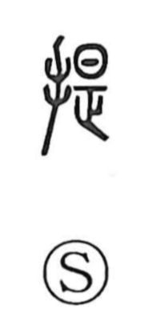

提

Kun: sageru, tazusaeru | On: tei
to carry ・ to present ・ to bring forward ・ to submit
Explanation
提 is a phono-semantic character: the hand radical (扌) points to an action done with the hand, while 是 supplies the sound, giving the on-reading tei, just as in 堤 and 隄. The Shuowen glosses it as “to carry in the hand,” from which come senses like “to lower or hang” and “to take along.” By extension it means to hold something out to others or to put it forward, seen in compounds such as 提携 (joining hands in cooperation), 提案 (bringing a plan forward), 提言 (advancing an opinion), 提示 (presenting for view), and 提出 (submitting or handing in). 前提 names a condition set forth in advance that undergirds what follows.